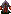

| PASTUSZEK - s³aby cia³em, silny duchem... Ta w skrócie mo¿naby go okreœliæ. Mieszka w oborze razem ze swymi podopiecznymi, czyli krowami. Dziêki swemu haryzmatycznemu usposobieniu :-) mo¿e podprowadziæ przeciwnikowi muæki pas¹ce siê na okolicznych pastwiskach z pastwiska. Mo¿e te¿ dokonaæ to, o czym w dyskietkowej wersji mo¿na by³o tylko pomarzyæ, a mianowicie oswoiæ niedŸwiedzia. Wystarczy "zaatakowaæ" go naszym pastuchem... i modliæ siê, ¿eby poskutkowa³o. Nie ma bowiem gwarancji, ¿e jego dzia³anie odniesie sukces. Z doœwiadczeñ przeprowadzonych w terenie wynika, ¿e szansa na oswojenie niedŸwiedzia wynosi oko³o 50%, to znaczy wysy³aj¹c jednego pastuszka na misia w po³owie przypadków ginie, a w drugiej po³owie udaje mu siê go oswoiæ. Sytuacja ulega diametralnej zmianie, gdy mamy do dyspozycji 2 pastuchów. Wtedy szansa na oswojenie niedŸwiedzia zbli¿a siê do 100%. Tak czy siak wp³yw tej postaci na kszta³t rozgrywki jest naprawdê niewielki. Poza misjami, gdzie musimy przyw³aszczyæ jak¹œ krowê, ¿eby wogóle siê rozwin¹æ, rzadko siê ich wykorzystuje. Czêœciej za to widzimy ich w kubraczkach o innych ni¿ czerwona barwach. Aha, obroñców przyrody pragnê jeszcze zapewniæ, ¿e w eksperymentach przeze mnie przeprowadzonych nie ucierpia³ ¿aden niedŸwiedŸ, a co najwy¿ej narazi³em je na ciê¿kostrawny posi³ek w postaci nieudolnego pastucha. ;-) Jako ciekawostkê podam, ¿e raz zdarzy³o mi siê, ¿e wrogi pastuszek oswoi³ mojego... kusznika! Musia³ byæ bardzo uwodzicielski. :-) |
 |
| KUSZNIK - Co tu du¿o mówiæ! Chyba najlepsza niemagiczna jednostka w grze. Zaraz, zaraz... Czy ja powiedzia³em "chyba"? Na pewno! Zmasowany atak kilku takich wojów potrafi czyniæ cuda. Jego pojawienie siê sprawi³o, ¿e rycerz, bêd¹cy he-manem w pierwszej czêœci gry, teraz zszed³ na nieco dalszy plan. Jego zaletami s¹: olbrzymi zasiêg strza³u oraz widzenia, szybkoœæ poruszania oraz wysokie obra¿enia przez niego zadawane. Polecam! |
|
| MAG - Hmm... Tutaj mam ciê¿ki orzech o zgryzienia. Z jednej strony mamy do czynienia ze znakomit¹ jednostk¹, potrafi¹c¹ zabiæ ka¿dego przeciwnika w mgnieniu oka. Umiejêtnoœæ teleportacji sprawia, ¿e przebycie dowolnej odleg³oœci jet kwesti¹ sekundy. Odnoszê jednak wra¿enie, ¿e autorzy w tym przypadku nieco przesadzili. Bowiem praktycznie we wszystkich misjach, w których ta postaæ jest dostêpna, wszelkie dzia³ania oparte s¹ w³aœnie na niej. A to po pewnym czasie staje siê nudne. Co prawda maga bardzo ³atwo jest zabiæ, ale nie zmienia to faktu, ¿e to najpotê¿niejsza postaæ w grze |
 |